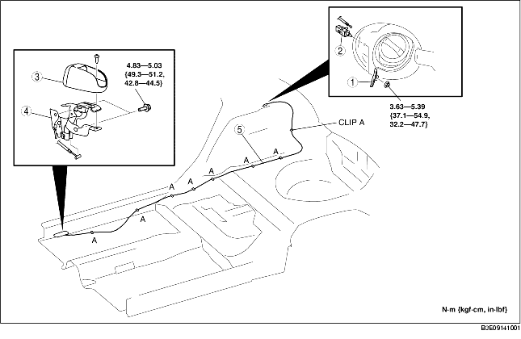

1. To remove the fuel-filler lid opener, remove the following procedure:
2. To remove the fuel-filler lid opener lever, remove the following part:.
3. When removing the fuel-filler lid opener cable, perform the following procedure:
4. Remove the following parts:
5. Partially peel back the floor covering so that the fuel-filler lid opener cable can be removed.
6. Remove the fuel-filler lid opener cable from clips A.
7. Remove in the order indicated in the table.
8. Install in the reverse order of removal.

.
|
1
|
Lift spring
|
|
2
|
Fuel-filler lid opener
|
|
3
|
Fuel-filler lid opener lever cover
|
|
4
|
Fuel-filler lid opener lever
|
|
5
|
Fuel-filler lid opener cable
|